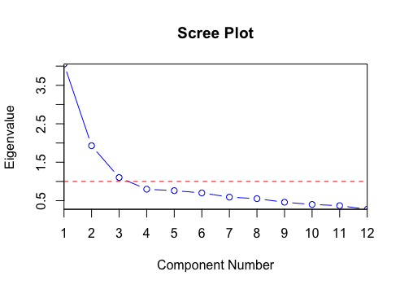

when wanting to reduce dimensions of multidimensional data and transform into
fewer dimensional data that accounts for the most variation by using linear combinations
when wanting to linearly mixed singles (that are statistically independent) from muliple sources
Ill-conditioning: not enough variables to constrain
However, want more points than variables
Minkowski Metric: weighted distance dij = (∑ |Xik - Xjk|m)1/m
m=1 gives the Manhattan Distance
m=2 gives the Euclidean Distance
m→∞ gives Chebyshev (maximum) Distance
Whiten: removing correlations in the data
finds linear combination that best explains the variance of the data
1st principal component is the linear combination that has the highest variance
ak: PCA coefficient for the kth component are calculated using Lagrangian multipliers
and is the kth eigenvalue of the covariance matrix
3 important cautions:
1. the components derived from the original variables will be different than the ones from standardized versions of the og variables
2. there is a lack of math for evaluating the significance of a component; need to visually examine elbow of scree plot
3. later components may be dominated by noise
Scree Plot: shows contribution to the sample variance by each component;
location of elbow tells where components are no longer "significant"
Biplot: scatterplot that uses points and vectors to represent structure; axes are a pair of components
regression model that finds linear relationships among observed variables that are indirectly caused by latent variables
also seeks to reduce dimensionality but unlike PCA finds factors that explain correlations
generalization of PCA that treats variables in groups
seeks correlations between linear combinations of one group and linear combinations of another
can only be used on linearly mixed sources
perfect Gaussian sources cannot be separated
uses matrices to unmix the data
need to pre-process the data by whitening it
whitened data needs to be rotated to avoid gaussianity of the axis projections